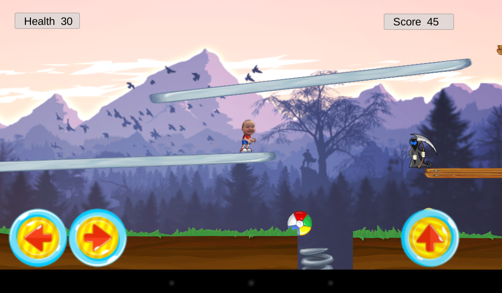
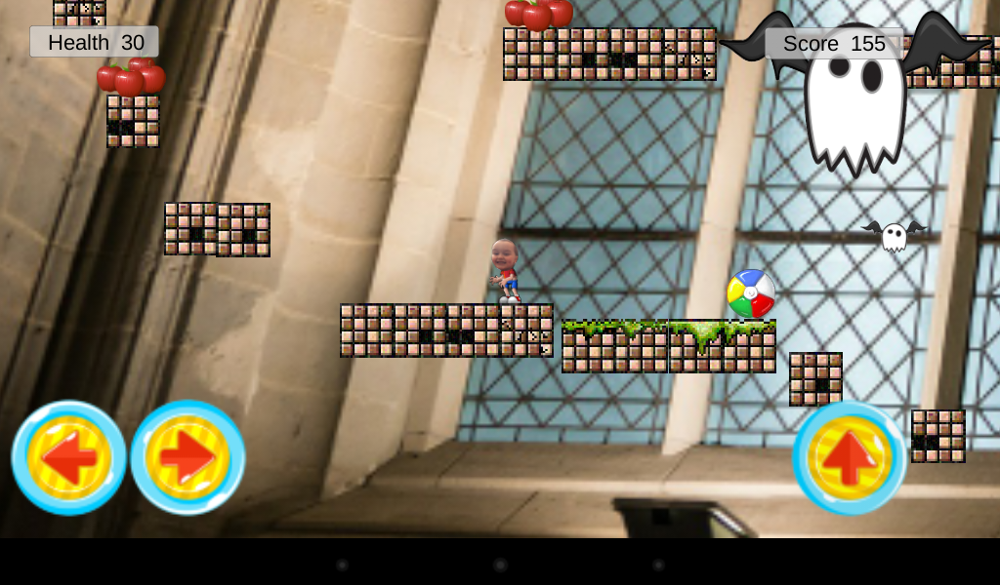
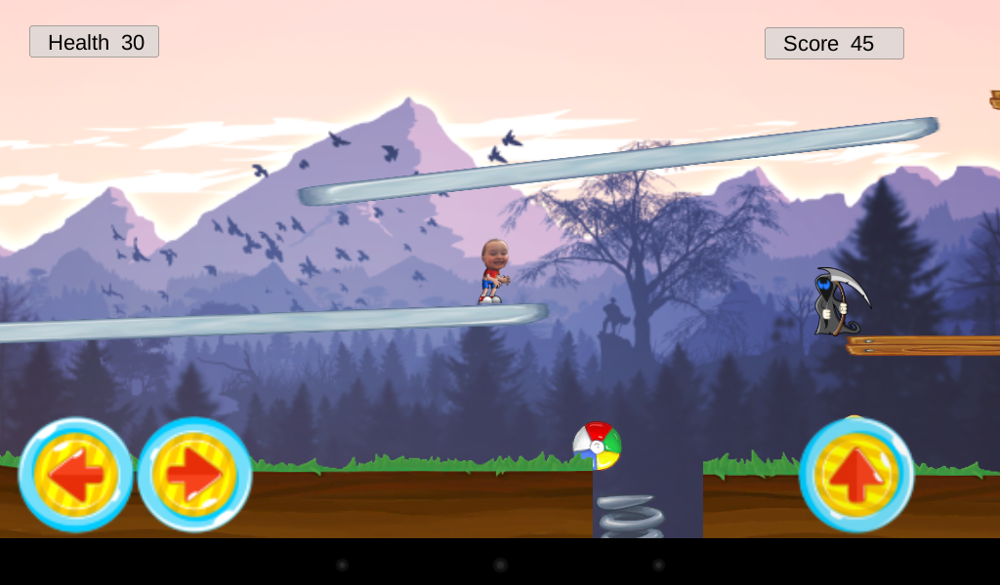
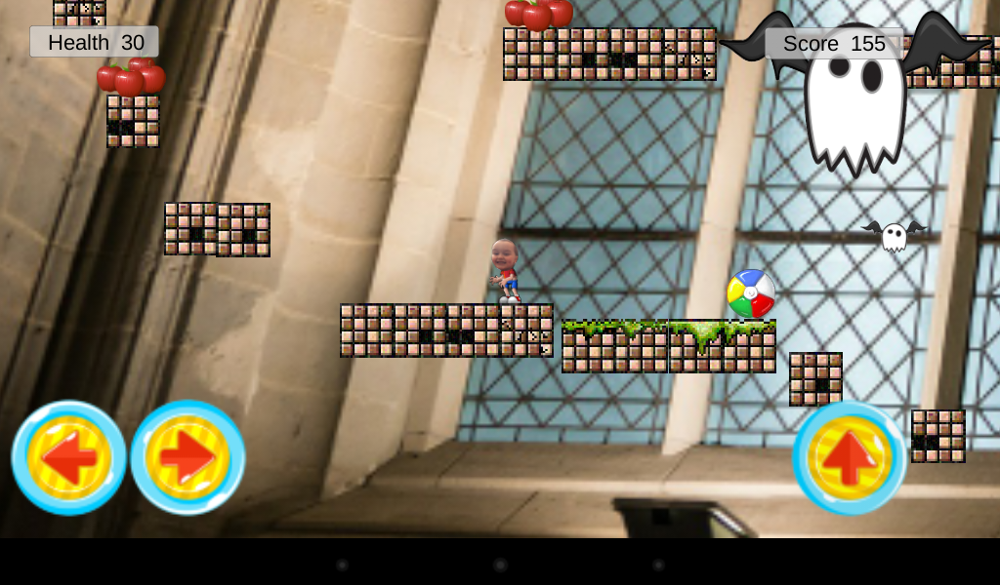

My son wanted me to make a video game for him, and this is what he wanted. The Octavian Game (my son chose the name) is a 2D platformer, built in Unity. You play as Octavian, and progress through four levels, avoiding enemies and pits, collecting coins and treasure. Each level has an exit door to the next one, until you beat the game.
I started making a Windows standalone version. Shortly thereafter, however, I made an Android version which has consumed the majority of my attention. It is currently available on Google Play and the Amazon App store.
Get The Octavian Game on Google Play!Or, get it here, on the Amazon App Store!
 



The scene creation was done mostly in Unity, with some image editing in GIMP. The code-behind is written in C#, and includes code for detecting solid objects below a character (so you can’t jump while in the air), movement, jumping, tracking score, tracking health, loading scenes, determining if a character dies, and a basic AI with basic collision detection and player following. I did not create an overly complex AI because I envisioned young kids playing the game (not experts), and the player has no attack, so enemies must be outsmarted or avoided to be overcome.